Data ke bivariate relationships aur multivariate dimensions ko ek sath discover karna: Bivariate scatter/hex/KDE plots ke sath marginal distributions (JointPlot) aur multidimensional feature matrices (PairPlot) ki complete practical masterclass in natural Hinglish.
Data science aur analytics workflow me EDA (Exploratory Data Analysis) ka matlab hota hai data ko bina kisi bias ke visually aur statistically explore karna. Socho tumhare paas ek college ke 80 students ka dataset hai jisme unke Study_Hours, Attendance_Pct, Assignment_Score, aur Final_Marks recorded hain.
Aam beginner sirf ek simple plt.scatter() draw karta hai. Lekin standard scatter plot me do bohot badi limitations hoti hain:
Joint Plot (sns.jointplot): Ek hi graphic canvas par do continuous variables ka bivariate relationship (center me) aur dono variables ki apni-apni univariate marginal distributions (top aur right borders par) simultaneously render karta hai!
Pair Plot (sns.pairplot): Ek complete multi-feature dataset ke sabhi numerical columns ka pairwise combination matrix draw karta hai — off-diagonal par bivariate scatter plots aur diagonal par univariate histograms/KDE curves!
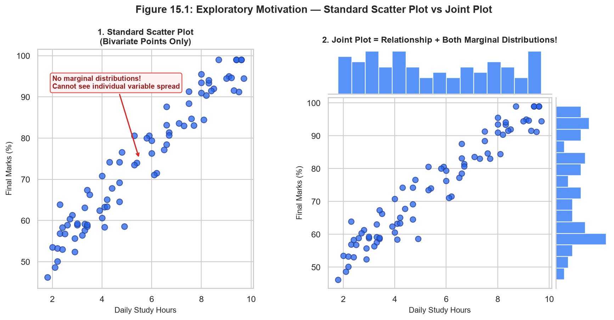
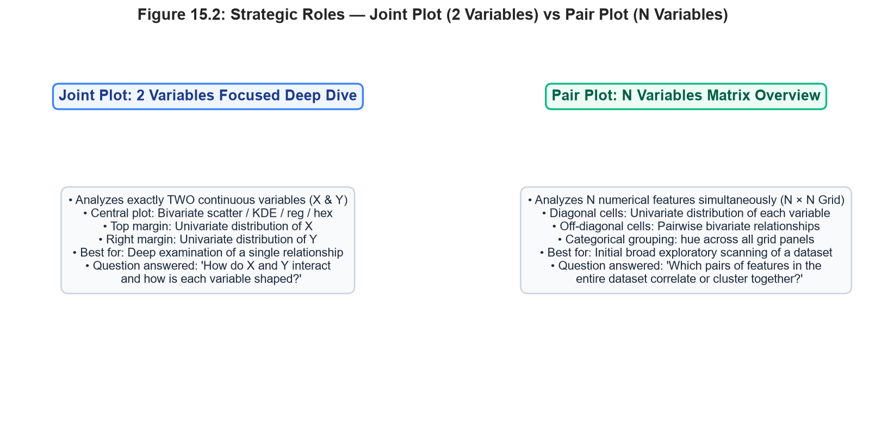
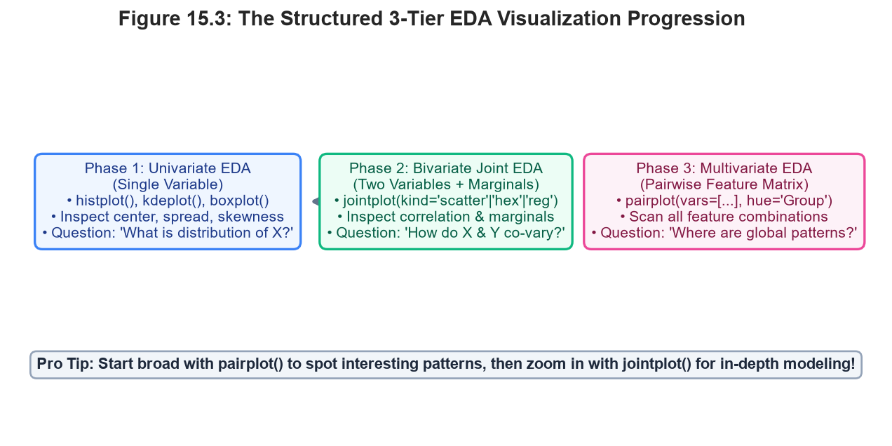
Seaborn me sns.jointplot() under-the-hood ek figure-level class JointGrid create karta hai. Ye grid canvas ko 3 coordinated subplots me divide karta hai:
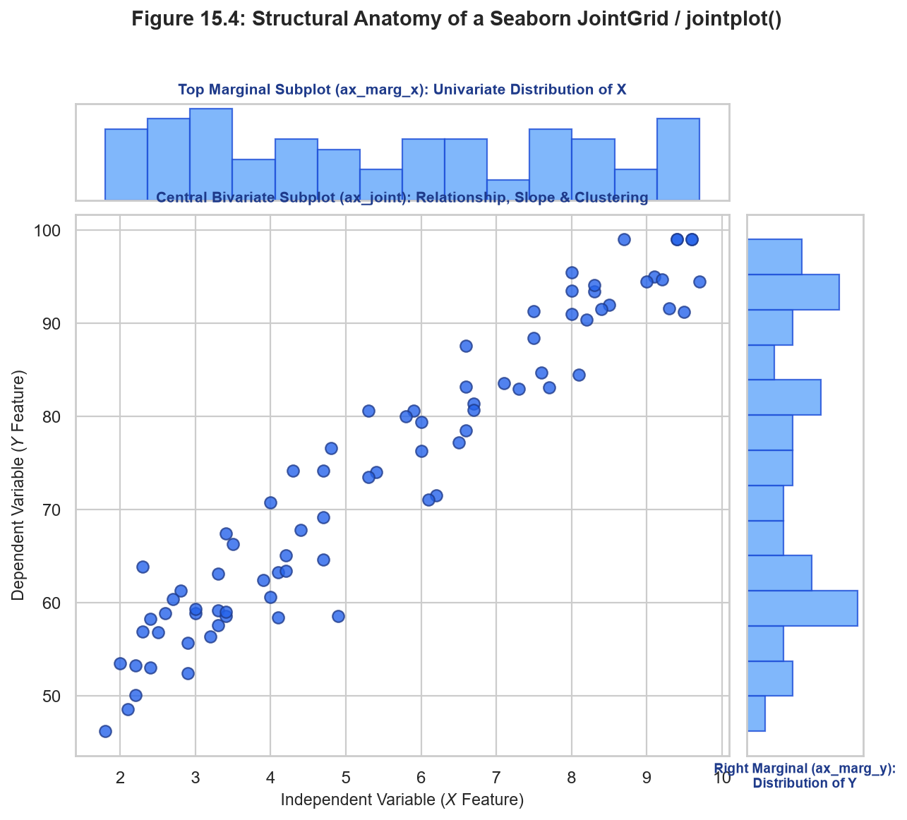
| Grid Subplot Region | Matplotlib Axis Object | What It Visualizes | Analytical Insights Revealed |
|---|---|---|---|
| Central Joint Canvas | g.ax_joint |
Bivariate relationship between X and Y (Scatter, KDE, Hex, Reg). | Direction (positive/negative), slope, clustering, non-linearity, correlation strength. |
| Top Marginal Canvas | g.ax_marg_x |
Univariate distribution of Independent Variable X (Aligned with X-axis). | X-variable ka center, spread, skewness, outliers, aur sample density. |
| Right Marginal Canvas | g.ax_marg_y |
Univariate distribution of Dependent Variable Y (Rotated, aligned with Y-axis). | Y-variable ki modality (unimodal vs bimodal), ceiling effects, floor truncations. |
Notice kijiye ki top plot ki horizontal axis central plot ki X-axis ke sath perfectly synchronized hoti hai, aur right plot ki vertical axis central plot ki Y-axis ke sath synchronized hoti hai!
Seaborn me basic joint plot banana bohot clean aur readable hai:
sns.jointplot(data=df, x="feature_x", y="feature_y", kind="scatter", **kwargs)| Parameter | Default | Description & Behavior |
|---|---|---|
data |
None |
Tidy Pandas DataFrame containing input features. |
x, y |
None |
Column names (strings) for horizontal and vertical variables. |
kind |
"scatter" |
Kind of plot to draw: "scatter", "hist", "kde", "reg", "hex", "resid". |
height |
6 |
Size of the figure (since JointGrid is always a square canvas, height = width in inches). |
ratio |
5 |
Ratio of joint axes size to marginal axes size. ratio=5 means central plot is 5x larger than marginals. |
space |
0.2 |
Spacing buffer between central joint plot and marginal subplots. |
hue |
None |
Categorical variable producing color-coded groups across both joint and marginal plots. |
marginal_ticks |
False |
If True, shows numerical tick labels on marginal distribution axes. |
joint_kws |
None |
Dictionary of keyword arguments passed directly to the central joint plotting function. |
marginal_kws |
None |
Dictionary of keyword arguments passed directly to the marginal distribution plotting functions. |
Agar aap chahte hain ki marginal histograms thode bade aur clear dikhein, toh ratio=3 ya ratio=4 use kijiye. Agar aap marginals ko bilkul central plot se sata kar chipkana chahte hain, toh space=0 set kar dijiye!
kind="scatter" Seaborn joint plot ka default mode hai. Ye central region me individual scatter points draw karta hai aur marginal regions par clean univariate histograms render karta hai.
import seaborn as sns
import matplotlib.pyplot as plt
import pandas as pd
# Load student performance dataset
df = pd.read_csv("student_performance_dataset.csv")
# Create Scatter Joint Plot
g = sns.jointplot(
data=df,
x="Study_Hours",
y="Final_Marks",
kind="scatter",
color="#2563EB",
height=5.8,
ratio=5,
space=0.2,
marginal_kws={"bins": 15, "fill": True, "color": "#3B82F6"}
)
g.set_axis_labels("Daily Study Hours", "Final Exam Marks (%)")
plt.show()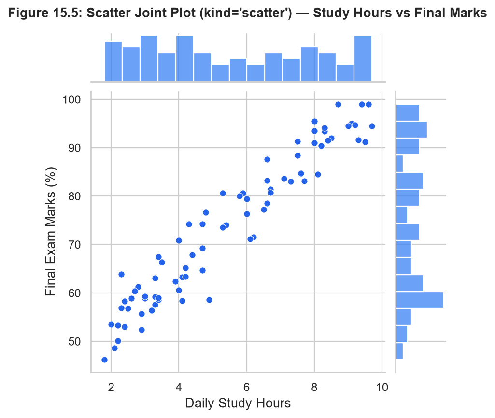
Scatter joint plot tab sabse best hota hai jab dataset moderate size ka ho (e.g. 50 se 1,000 points). Yahan aap individual students ko clearly inspect kar sakte hain aur unke exact study duration aur exam marks ko visualize kar sakte hain.
Jab dataset me points densely pack hone lagte hain, toh scatter plot me individual dots overlap ho jate hain. Is situation me kind="hist" ek bohot powerful alternative ban jata hai.
kind="hist" central plot ko 2D Binned Heatmap me convert karta hai jahan canvas ko rectangular grids me divide kiya jata hai aur har grid box ka color shade us region me fall hone wale data points ke frequency count ko represent karta hai!
import seaborn as sns
import matplotlib.pyplot as plt
import pandas as pd
df = pd.read_csv("student_performance_dataset.csv")
# Create 2D Histogram Joint Plot with Colorbar
g = sns.jointplot(
data=df,
x="Study_Hours",
y="Final_Marks",
kind="hist",
color="#059669",
height=5.5,
ratio=5,
cbar=True, # Display colorbar indicating observation frequency
cbar_kws={"shrink": 0.7, "label": "Student Frequency Count"}
)
g.set_axis_labels("Daily Study Hours", "Final Exam Marks (%)")
plt.show()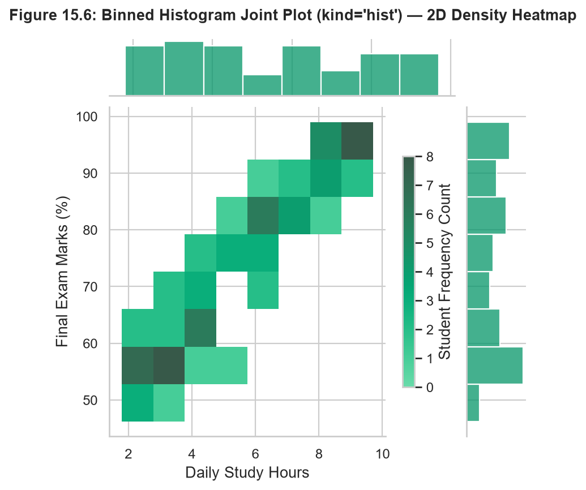
Agar 20 students ne exactly 5 hours padhkar 70 marks score kiye hain, toh scatter plot par sirf 1 dot dikhega (baki 19 dots piche chhip jayenge!). Lekin kind="hist" us cell ko deep dark shade dega aur colorbar clearly batayega ki yahan 20 students concentrated hain!
Agar aap discrete points ya discrete boxes ke bajay smooth statistical probability landscape dekhna chahte hain, toh kind="kde" (Kernel Density Estimation) sabse visually appealing option hai.
Ye central plot par continuous Topographic Elevation Contours (contour rings) draw karta hai — jaise map par pahad ki unchai dikhai jati hai, waise hi yahan concentric rings data ki highest density peaks ko represent karti hain!
import seaborn as sns
import matplotlib.pyplot as plt
import pandas as pd
df = pd.read_csv("student_performance_dataset.csv")
# Create Smooth 2D KDE Joint Plot
g = sns.jointplot(
data=df,
x="Study_Hours",
y="Final_Marks",
kind="kde",
color="#7C3AED",
height=5.5,
ratio=5,
fill=True, # Fill contours with gradient shading
cmap="Purples"
)
g.set_axis_labels("Daily Study Hours", "Final Exam Marks (%)")
plt.show()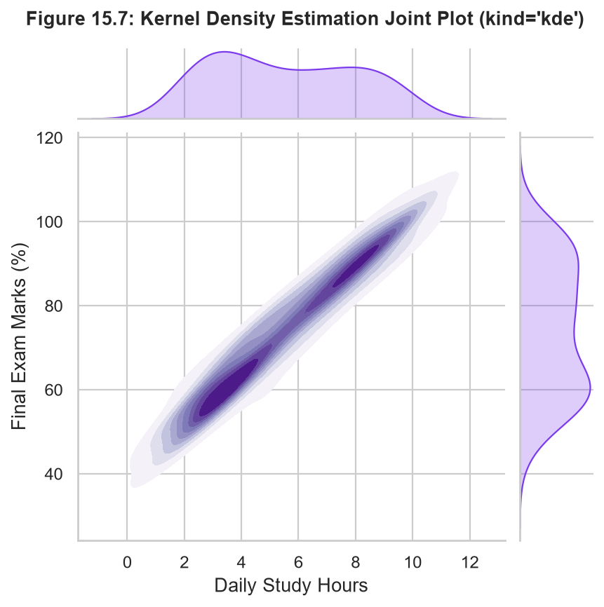
KDE plot actual discrete observations ko draw nahi karta, balki Gaussian mathematical kernels ke zariye ek continuous smoothed surface interpolate karta hai. Agar dataset bohot chhota ho (e.g. < 25 points), toh KDE artificial peaks fabricate kar sakta hai jo real data me maujood nahi hoteen!
Jab aap do variables ke beech underlying quantitative slope aur trendline dekhna chahte hain, toh kind="reg" use kiya jata hai. Ye Topic 14 ke sns.regplot() ko marginal KDE distribution curves ke sath combine karta hai:
import seaborn as sns
import matplotlib.pyplot as plt
import pandas as pd
df = pd.read_csv("student_performance_dataset.csv")
# Create Regression Joint Plot with OLS line and CI band
g = sns.jointplot(
data=df,
x="Study_Hours",
y="Final_Marks",
kind="reg",
color="#DC2626",
height=5.5,
ratio=5,
scatter_kws={"alpha": 0.75, "s": 45},
line_kws={"linewidth": 2.4, "color": "#991B1B"}
)
g.set_axis_labels("Daily Study Hours", "Final Exam Marks (%)")
plt.show()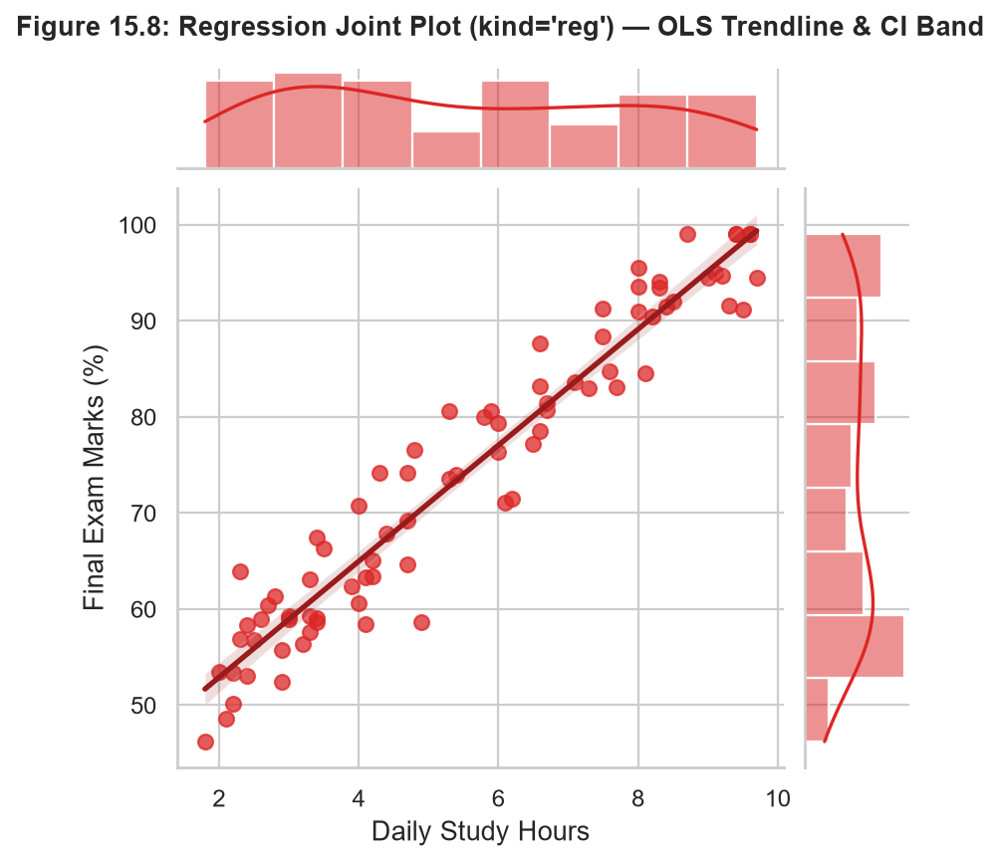
Verified Regression Formula: Is dataset par fitted model hai: Final Marks = 40.80 + 6.04 * Study Hours. Marginal KDE curves clearly confirm karti hain ki predictor (Study Hours) center around 5.5 hours par symmetrically balanced hai aur outcome (Marks) me koi severe artificial floor truncation nahi hai.
Agar aapke paas 5,000 se lekar 500,000 data points ka massive dataset ho (jaise e-commerce clickstream ya ride-sharing GPS pings), toh kind="scatter" computer memory ko choke kar dega aur plot solid black blob ban jayega.
Iska ultimate data-science solution hai Hexagonal Binning (kind="hex"). Ye pure canvas par madhumakkhi ke chhatte (honeycomb) jaisi hexagonal cells draw karta hai:
import seaborn as sns
import matplotlib.pyplot as plt
import pandas as pd
df_ecom = pd.read_csv("ecommerce_customer_analytics.csv")
# Create Hexbin Joint Plot
g = sns.jointplot(
data=df_ecom,
x="Orders_Placed",
y="Monthly_Spend_USD",
kind="hex",
color="#D97706",
height=5.5,
ratio=5,
gridsize=18, # Number of hexagons in x-direction
cmap="YlOrBr"
)
g.set_axis_labels("Monthly Orders Placed", "Monthly Spend ($ USD)")
plt.show()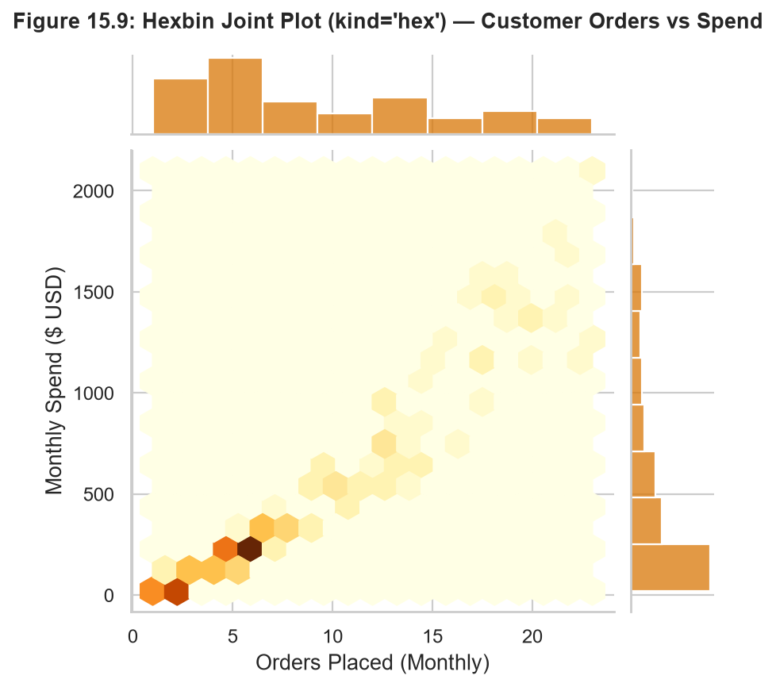
Geometry ka golden rule: Square cells ke diagonal neighbors side neighbors ke mukable zyada door hote hain (√2 ≈ 1.41× further). Lekin Regular Hexagons me center se sabhi 6 neighbors ka distance mathematically equidistant hota hai! Isliye hexbins natural radial clustering ko bina directional bias ke faithfully represent karte hain!
Modern Seaborn (0.11+) me sns.jointplot() categorical grouping (hue) ko seamlessly support karta hai. Jab aap hue="Academic_Major" pass karte hain, toh do major changes hote hain:
import seaborn as sns
import matplotlib.pyplot as plt
import pandas as pd
df = pd.read_csv("student_performance_dataset.csv")
# Create Grouped Joint Plot by Academic Major
g = sns.jointplot(
data=df,
x="Study_Hours",
y="Final_Marks",
hue="Academic_Major",
palette={"Computer Science": "#2563EB", "Data Science": "#059669", "Electronics": "#D97706"},
height=5.8,
ratio=5
)
g.set_axis_labels("Daily Study Hours", "Final Exam Marks (%)")
plt.show()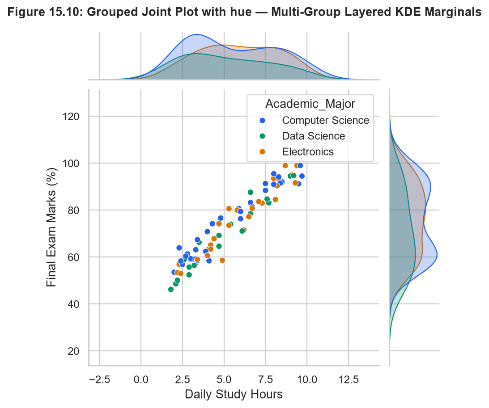
Kabhi-kabhi aapko predefined kind options ke beyond custom hybrid visualization create karni hoti hai — jaise central plot me scatter dots ke upar KDE contour rings overlay karna, aur top margin par histogram ke bajay Boxplot draw karna!
Iske liye hum directly sns.JointGrid class use karte hain:
import seaborn as sns
import matplotlib.pyplot as plt
import pandas as pd
df = pd.read_csv("student_performance_dataset.csv")
# 1. Initialize custom JointGrid
g = sns.JointGrid(data=df, x="Study_Hours", y="Final_Marks", height=5.8, ratio=5)
# 2. Central plot: Overlay Scatter dots + KDE contour lines
g.plot_joint(sns.scatterplot, color="#2563EB", s=50, alpha=0.75, edgecolors="#1E3A8A")
g.plot_joint(sns.kdeplot, color="#DC2626", levels=5, alpha=0.7, linewidths=1.5)
# 3. Marginals: Boxplot on Top X, KDE curve on Right Y
sns.boxplot(x=df["Study_Hours"], ax=g.ax_marg_x, color="#93C5FD")
sns.kdeplot(y=df["Final_Marks"], ax=g.ax_marg_y, color="#2563EB", fill=True, alpha=0.4)
g.set_axis_labels("Daily Study Hours", "Final Exam Marks (%)")
plt.show()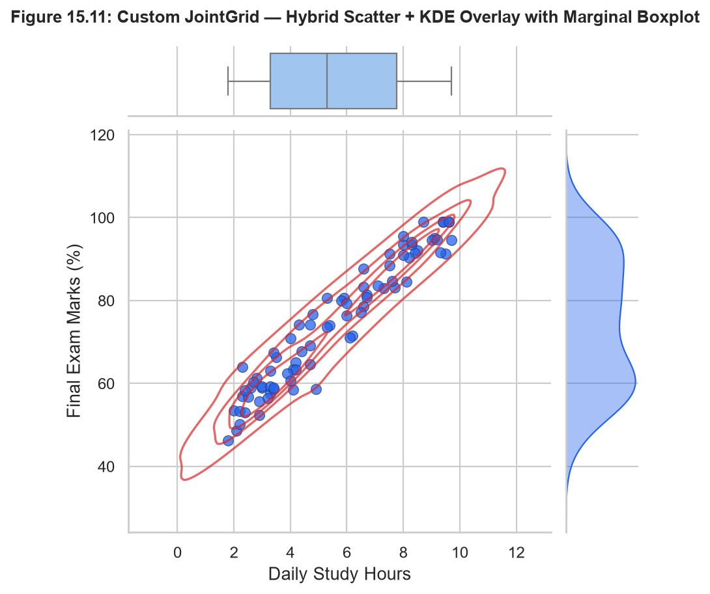
Ab socho ek real data-science project jisme tumhare paas 4 se lekar 8 numerical columns hain. Agar aap har pair ke liye alag-alag plt.scatter() ya sns.jointplot() banayenge, toh aapko N × (N - 1) / 2 alag-alag plots likhne padenge — 5 features ke liye 10 plots aur 8 features ke liye 28 plots!
Is manual frustration ko eliminate karne ke liye Seaborn deta hai Pair Plot (sns.pairplot). Ye ek hi line of code me ek complete N × N grid matrix render kar deta hai:
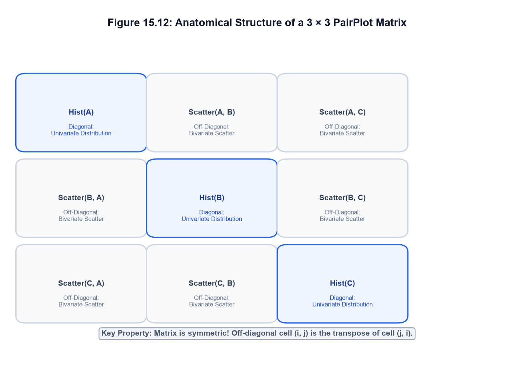
Study_Hours vs Study_Hours). Ek variable ka apne hi sath scatter plot banana useless hoga (kyunki wo seedhi diagonal line ban jayegi), isliye Seaborn diagonal par automatically Univariate Distribution (Histogram ya KDE) draw karta hai!Seaborn me pair plot ka foundational syntax:
sns.pairplot(data=df, vars=["col1", "col2", "col3"], hue="Category", **kwargs)| Parameter | Default | Description & Purpose |
|---|---|---|
data |
Required | Tidy Pandas DataFrame containing numerical and categorical features. |
vars |
None |
List of specific numerical column names to plot. If omitted, plots all numerical columns in DataFrame! |
x_vars, y_vars |
None |
Allows non-square rectangular matrices by specifying different variables for rows and columns. |
hue |
None |
Categorical column name for color-coding observations across both diagonal and off-diagonal subplots. |
palette |
None |
Color palette name or dictionary mapping for hue categories. |
kind |
"scatter" |
Plot kind for off-diagonal subplots: "scatter", "kde", "hist", "reg". |
diag_kind |
"auto" |
Plot kind for diagonal subplots: "auto", "hist", "kde", or None to leave blank. |
corner |
False |
If True, renders only the lower triangle of the matrix, eliminating redundant duplicate cells! |
height |
2.5 |
Height (in inches) of each individual subplot panel in the grid. |
aspect |
1 |
Aspect ratio of each subplot (aspect * height = width of each panel). |
plot_kws |
None |
Dictionary of keyword arguments passed to off-diagonal plotting functions (e.g. alpha, s). |
diag_kws |
None |
Dictionary of keyword arguments passed to diagonal plotting functions. |
Agar aapke DataFrame me 40 columns hain aur aapne bina vars ke simply sns.pairplot(df) run kar diya, toh Seaborn 40 × 40 = 1,600 subplots draw karne ki koshish karega! Computer freeze ho jayega aur Jupyter kernel crash ho jayegi. Hamesha 3 se 6 meaningful numerical columns ko explicitly select kijiye!
Pair plot ke main diagonal par har feature ki univariate distribution render hoti hai. Seaborn do primary diagonal representations support karta hai:
| diag_kind Option | Underlying Visualization | Best Use Case | Behavior with hue |
|---|---|---|---|
diag_kind="hist" |
1D Discrete Binned Histogram | Discrete integer counts, sample sizes < 50, skewness inspection. | Draws layered or stacked colored histogram bars. |
diag_kind="kde" |
1D Smooth Continuous Density Curve | Continuous measurements, large sample sizes, multi-group density shifts. | Draws smooth overlapping bell curves per category group. |
diag_kind="auto" |
Automatic Selection (Default) | If hue is None → uses "hist". If hue is present → automatically switches to "kde"! |
Smart adaptive default behavior. |
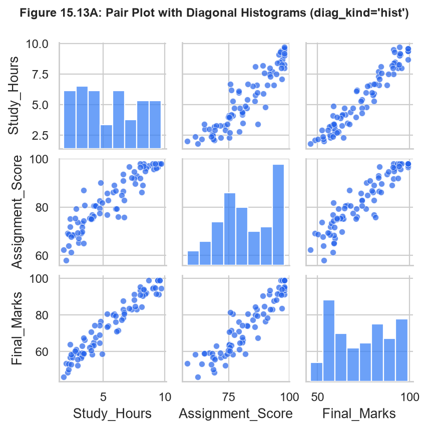
Ek standard 4 × 4 pair plot me total 16 subplots bante hain. Notice kijiye ki diagonal ke upar wala hissa (Upper Triangle) aur diagonal ke niche wala hissa (Lower Triangle) exactly identical information contain karte hain — bas X aur Y axes aapas me swapped (transposed) hote hain!
Upper half ko render karna computational time ko double karta hai aur audience ko redundant visual clutter dikhata hai. Seaborn iska clean solution deta hai: corner=True:
import seaborn as sns
import matplotlib.pyplot as plt
import pandas as pd
df = pd.read_csv("student_performance_dataset.csv")
# Corner=True renders only lower triangle of matrix
g = sns.pairplot(
data=df,
vars=["Study_Hours", "Assignment_Score", "Final_Marks"],
corner=True, # Drops redundant upper triangle
height=2.2,
aspect=1.0,
plot_kws={"s": 35, "alpha": 0.75, "color": "#059669"},
diag_kws={"color": "#10B981", "fill": True}
)
plt.show()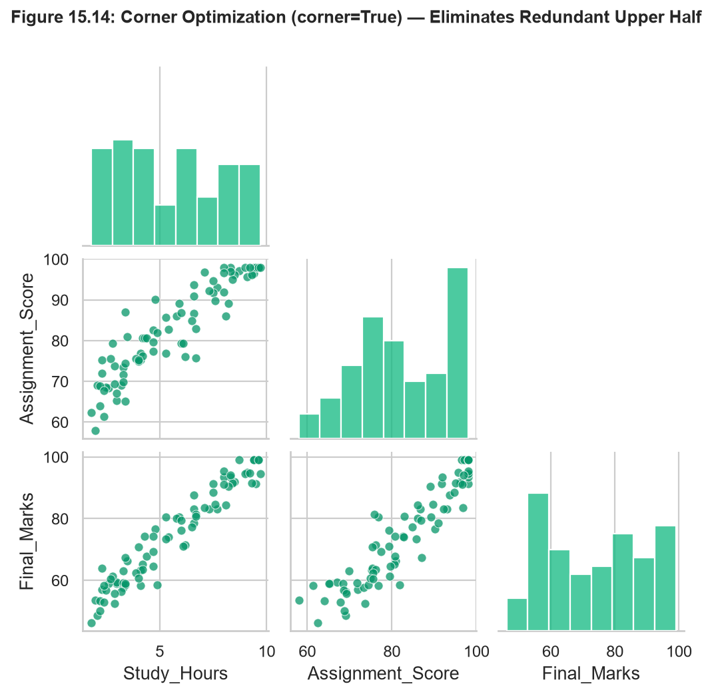
Real-World Scenario: Ek university academic committee 80 engineering students ke 4 critical performance metrics ka comprehensive multivariate audit conduct kar rahi hai:
Study_Hours: Average daily study hours (1.8 to 9.8 hrs, Mean = 5.53 hrs)Attendance_Pct: Lecture attendance percentage (62% to 99%, Mean = 80.07%)Assignment_Score: Cumulative lab & project assignments (40 to 98, Mean = 82.49)Final_Marks: End-semester exam percentage (35 to 99%, Mean = 74.2%)import seaborn as sns
import matplotlib.pyplot as plt
import pandas as pd
df_students = pd.read_csv("student_performance_dataset.csv")
# Full 4-variable pair plot grouped by Academic Major
stu_vars = ["Study_Hours", "Attendance_Pct", "Assignment_Score", "Final_Marks"]
g = sns.pairplot(
data=df_students,
vars=stu_vars,
hue="Academic_Major",
palette={"Computer Science": "#2563EB", "Data Science": "#059669", "Electronics": "#D97706"},
diag_kind="kde",
height=2.0,
aspect=1.0,
plot_kws={"s": 35, "alpha": 0.75}
)
g.fig.subplots_adjust(top=0.92)
g.fig.suptitle("College Student Performance 4-Variable Pair Plot by Academic Major", fontweight="bold")
plt.show()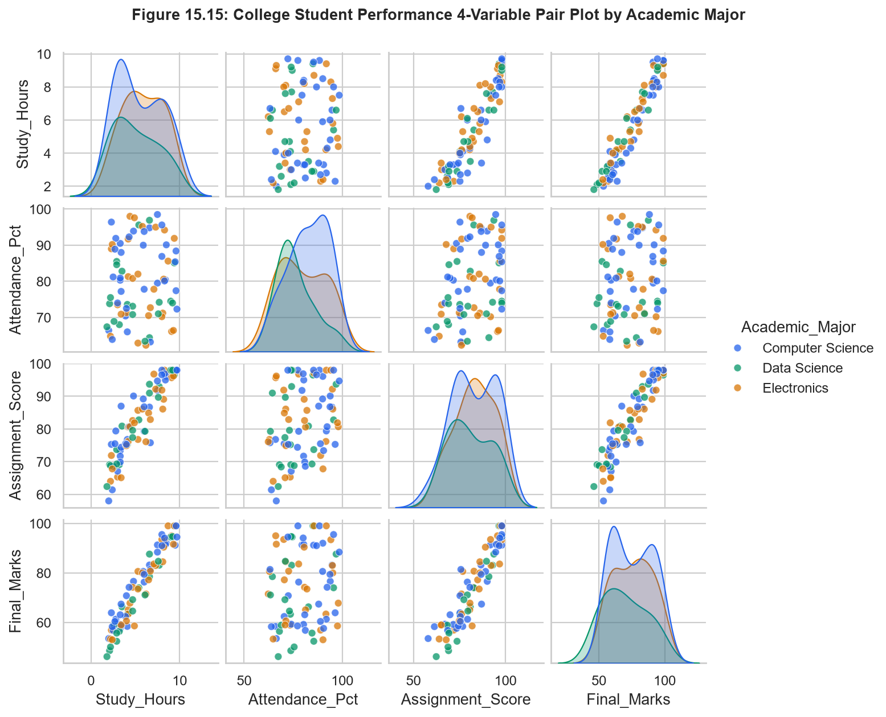
1. Study Hours vs Final Marks: Tight upward linear relationship — each daily hour studied contributes approx +6.04% to final marks.
2. Attendance vs Marks: Wide cloud (low correlation r = 0.1639). 95% attendance wale students ke marks bhi 45% se 95% ke beech spread hain — attendance is a prerequisite, not a sufficient condition for mastery!
Real-World Scenario: Ek multinational D2C e-commerce platform 120 customers ke purchasing habits aur mobile app engagement metrics ko audit kar rahi hai:
import seaborn as sns
import matplotlib.pyplot as plt
import pandas as pd
df_ecom = pd.read_csv("ecommerce_customer_analytics.csv")
# Multivariate exploration of Customer Segments
ecom_vars = ["Orders_Placed", "Monthly_Spend_USD", "Customer_Age", "App_Screen_Time_Mins"]
g = sns.pairplot(
data=df_ecom,
vars=ecom_vars,
hue="Customer_Tier",
palette={"Standard": "#94A3B8", "Premium": "#2563EB", "VIP": "#D97706"},
height=1.9,
aspect=1.0,
plot_kws={"s": 35, "alpha": 0.75}
)
g.fig.subplots_adjust(top=0.92)
g.fig.suptitle("E-Commerce Customer Analytics Pair Plot Across Customer Tiers", fontweight="bold")
plt.show()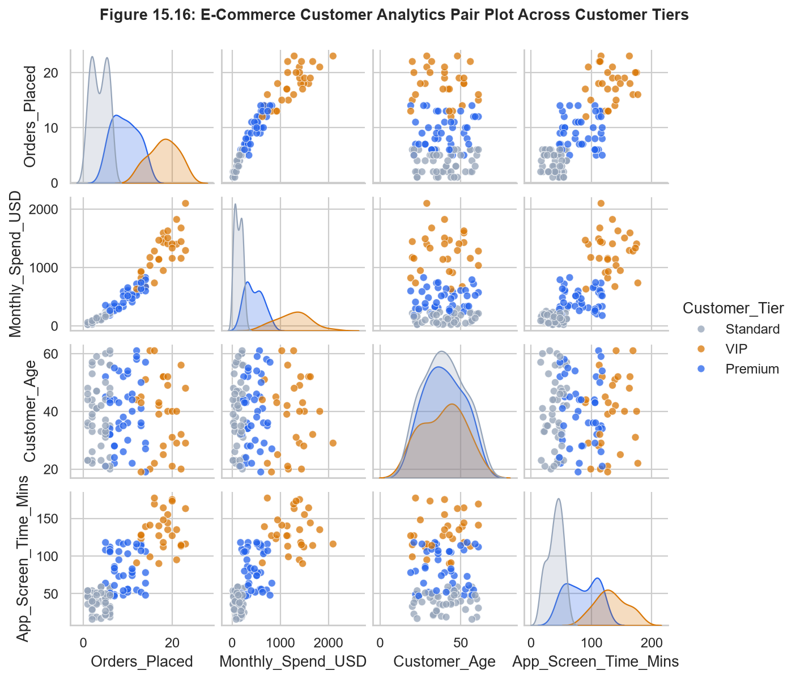
Verified Metrics: Orders Placed aur Monthly Spend ke beech massive correlation hai (r = 0.9536). Average spend Standard tier ke liye $130.34 hai jabki VIP tier ke liye $1264.92 hai.
Causation Caveat: App screen time aur spend ke beech correlation r = 0.7589 hai. Lekin iska matlab ye nahi ki user ko app par roke rakhne se wo zabardasti paise kharch karega — high-intent shoppers naturally browse more!
Modern wearable fitness smartwatches (Apple Watch, Fitbit, Garmin) continuous biometric telemetry log karte hain. Is dataset me 100 users ke biometric signals analyze kiye gaye hain: Daily_Steps, Active_Minutes, Sleep_Hours, aur Calories_Burned, categorized by Fitness_Category (Sedentary, Moderate, Athlete).
Biomedical analytics me single feature isolated inspection deceptive hoti hai. For example, agar kisi user ke high calories burned record hue hain, to kya wo excessive physical workouts ki wajah se hai ya elevated baseline metabolic rate? Pair plot multidimensional matrix cross-comparison se in teeno user cohorts ke distinct biometric signatures instantly isolate ho jate hain.
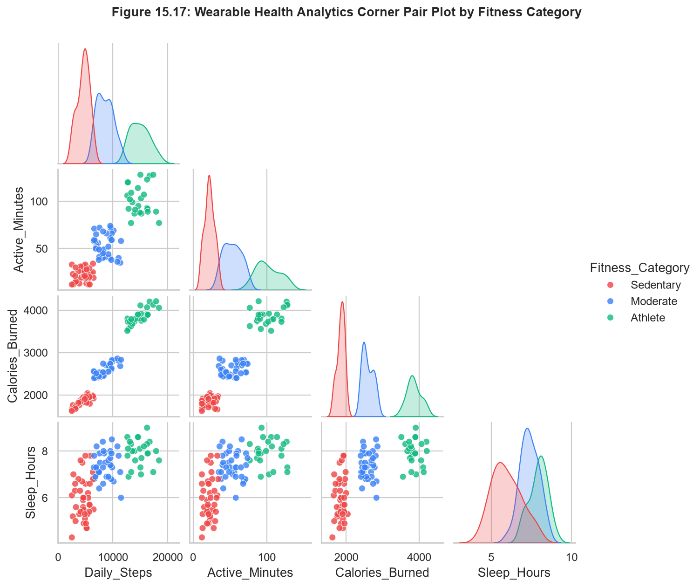
diag_kind="kde" and corner=True. Notice the pristine non-overlapping density separation and positive linear trajectories.
import pandas as pd
import seaborn as sns
import matplotlib.pyplot as plt
# Load wearable fitness telemetry dataset
df_fit = pd.read_csv("scratch/seaborn_topic15_data/fitness_wearable_health.csv")
# Configure publication typography and styling
sns.set_theme(style="whitegrid", font_scale=1.05)
palette_fit = {"Sedentary": "#e74c3c", "Moderate": "#f39c12", "Athlete": "#2ecc71"}
# Execute pair plot with lower-triangle corner optimization and KDE diagonals
g = sns.pairplot(
data=df_fit,
vars=["Daily_Steps", "Active_Minutes", "Sleep_Hours", "Calories_Burned"],
hue="Fitness_Category",
palette=palette_fit,
diag_kind="kde",
corner=True,
plot_kws={"alpha": 0.82, "s": 50, "edgecolor": "white", "linewidths": 0.5},
diag_kws={"fill": True, "alpha": 0.45}
)
# Refine figure super-title and layout
g.figure.suptitle("Wearable Health Biometrics: Multi-Cohort Pair Plot Analysis", y=1.02, fontsize=15, weight="bold")
plt.savefig("coding/seaborn/topic_15/assets/pairplot_fitness_health_analytics.png", dpi=160, bbox_inches="tight")
plt.close()Data science workflows me students aksar confuse hote hain ki simple sns.scatterplot(), sns.jointplot(), aur sns.pairplot() me se kab kis tool ka chayan karna chahiye. Yeh deep architectural comparison unke fundamental trade-offs ko crystal clear karta hai:
| Analytical Dimension | sns.scatterplot() | sns.jointplot() | sns.pairplot() |
|---|---|---|---|
| Dimensionality | Exactly 2 continuous variables (X vs Y). | Exactly 2 continuous variables (X vs Y). | M continuous variables (produces M × M subplots). |
| Univariate Distributions | None (no marginals or diagonals rendered). | Top & Right marginal axes (ax_marg_x, ax_marg_y). | Main diagonal subplots (diag_kind="hist" | "kde"). |
| Return Object | matplotlib.axes.Axes |
seaborn.axisgrid.JointGrid |
seaborn.axisgrid.PairGrid |
| Subplot Grid Integration | Seamless (directly embeds via ax=ax_i in plt.subplots). |
Complex (figure-level canvas; cannot embed via ax argument). | Complex (figure-level canvas; generates entire multi-plot figure). |
| Categorical Grouping (hue) | Standard color mapping per observation. | Supported in scatter/kde/hist marginals. | Supported across off-diagonal scatters & diagonal KDEs. |
| Overplotting Mitigation | Alpha transparency and marker sizing adjustments. | Built-in hexbin (kind="hex") and 2D hist (kind="hist"). |
Lower triangle reduction via corner=True. |
| Rendering Computational Cost | O(N) — Extremely fast (milliseconds). | O(N) — Very fast (under 1 second). | O(M² × N) — High (scales quadratically with feature count M). |
| Primary Analytical Role | Isolated bivariate hypothesis testing. | Fused bivariate relationship + univariate distribution check. | Holistic multivariate feature space exploration & collinearity audit. |
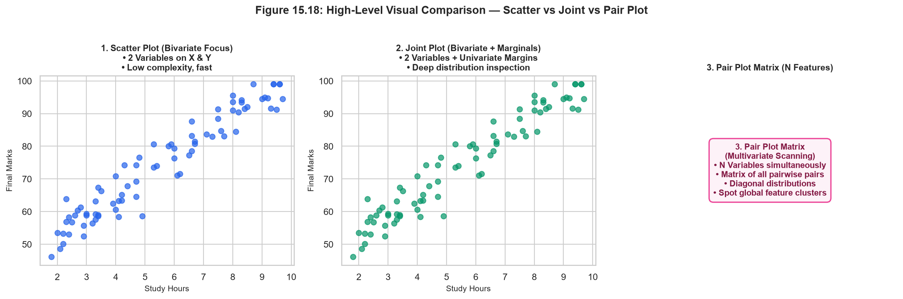
Seaborn jointplot() ka kind parameter bivariate geometry ko completely transform kar deta hai. Neeche diye gaye visual comparison gallery me ek hi dataset par paanchon primary kinds ka side-by-side comparison dekhein:
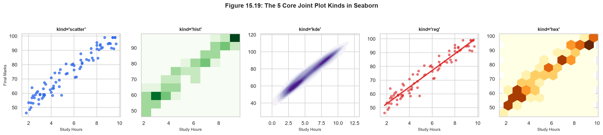
sns.jointplot() kinds: Scatter (individual points), Hist (2D binned heatmap), KDE (smooth density contours), Reg (linear fit line with 95% CI), and Hex (hexagonal bin aggregation).
Pair plots me bhi kind parameter off-diagonal subplots ki representation control karta hai (kind="scatter", kind="kde", kind="hist", ya kind="reg"):
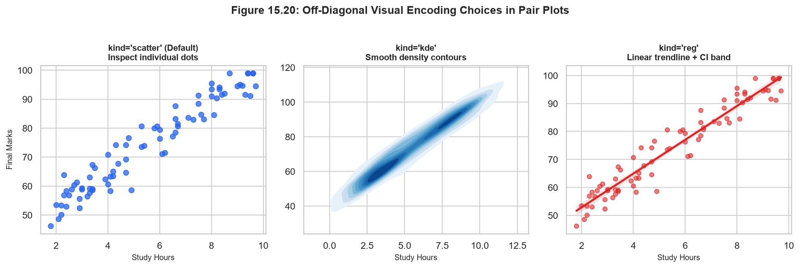
sns.pairplot(): Scatter dots vs KDE contours vs 2D Histograms vs Regression trendlines.
Jab dataset me hazaron observations hoti hain (jaise dense telemetry ya web clickstreams), to simple scatter plot ek solid dark blob ban jata hai jisme density variations invisible ho jati hain. Hexagonal binning (kind="hex") spatial tessellation create karke density ko color intensity se encode karta hai:
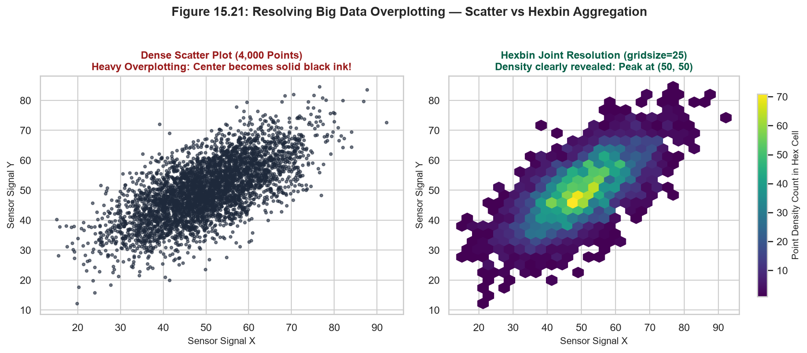
Joint plots aur pair plots powerful figure-level visualizations hain, lekin beginner aur intermediate developers frequently inke execution me common traps me phas jate hain. Neeche 16 real-world pitfalls, unke underlying root causes, aur verified industry fixes diye gaye hain:
| # | Pitfall / Error Message | Root Cause | Industry Standard Solution |
|---|---|---|---|
| 1 | ValueError: Continuous hue not supported for hex |
kind="hex" underlying hexagonal binning algorithm multi-color overlay support nahi karta. |
Hex ke saath hue drop karein, ya categorical grouping ke liye kind="kde" ya kind="scatter" use karein. |
| 2 | Laggy browser / Out-of-memory crash during sns.pairplot(df) |
DataFrame me 15+ numerical columns hain, jisse 15 × 15 = 225 subplots render hone lagte hain. | Hamesha vars=["col1", "col2", "col3", "col4"] specify karein to limit feature count to ≤ 5. |
| 3 | Cognitive clutter from redundant duplicate plots in pairplot | Upper triangle lower triangle ka exact transpose hota hai, wasting 50% screen space and doubling render time. | Set corner=True to automatically drop the duplicate upper triangle! |
| 4 | AttributeError: 'JointGrid' object has no attribute 'ax' |
sns.jointplot() returns a JointGrid object, not a single Matplotlib Axes. |
Use g.ax_joint for center plot, or g.ax_marg_x / g.ax_marg_y for marginals. |
| 5 | Marginal histogram labels or title chopped off in saved PNG | Calling plt.tight_layout() disrupts JointGrid custom marginal axis geometry. |
Avoid plt.tight_layout() on JointGrid. Instead use g.figure.subplots_adjust(top=0.92). |
| 6 | KDE failure / Flat diagonal line: LinAlgError: singular matrix |
A feature has zero variance (all values identical or binary constant) causing zero covariance in KDE. | Set diag_kind="hist" or remove zero-variance constant features before plotting. |
| 7 | Trying to embed jointplot() inside plt.subplots(1, 2) |
jointplot is a figure-level function that creates its own standalone canvas and ignores ax=.... |
Use individual sns.scatterplot(..., ax=ax1) or manage sub-canvases independently. |
| 8 | Continuous float passed to hue creating 500+ color legend |
Float variable passed to categorical hue argument forces continuous color binning. |
Discretize continuous column using pd.qcut(df['col'], q=3, labels=['Low', 'Med', 'High']) first. |
| 9 | Points completely invisible in dense scatter jointplot | Default solid opacity causes thousands of points to overlap identically without depth. | Pass joint_kws={"alpha": 0.3, "s": 20} or switch to kind="hex". |
| 10 | TypeError: Got both 'linewidth' and 'linewidths' |
Matplotlib scatter kwarg alias collision when passing linewidth inside plot_kws. |
Explicitly use linewidths=0.5 (plural) in Matplotlib scatter dictionary arguments. |
| 11 | Misaligned diagonal histogram bins across hue groups | Each group calculates independent bin edges leading to visually mismatched bars. | Pass diag_kws=dict(common_norm=False, bins=15) to align bin calculations. |
| 12 | Hexagonal bins stretched into thin ellipses | X-axis and Y-axis have wildly different numeric magnitudes (e.g., 0-1 GPA vs 0-50,000 Salary). | Tune joint_kws=dict(gridsize=25) or normalize features with standard scaling prior to plotting. |
| 13 | Super-title overlaps top marginal plot in JointGrid | plt.title() places title on the last active axis (usually right marginal). |
Use g.figure.suptitle("Main Title", y=1.03) to anchor title on the overarching figure. |
| 14 | Entire rows missing due to NaN in unselected columns | Passing raw DataFrame with NaNs to pairplot() causes aggressive row dropping. |
Clean subset explicitly: df.dropna(subset=selected_vars) before passing to Seaborn. |
| 15 | Palette color mismatch across categorical groups | Custom dictionary keys don't match exact string cases of DataFrame category levels. | Verify df['cat'].unique() and map exact string keys in palette={"CatA": "#color"}. |
| 16 | Saved figure truncated or edges cut off | Using default plt.savefig('plot.png') without bounding box optimization. |
Always pass bbox_inches="tight" and high resolution dpi=160 (or 300 for print). |
Har column ko bina soche samjhe feed karna aur redundant square matrix render karna:
# BAD CODE: 15 columns = 225 subplots!
import seaborn as sns
# Crashes browser / memory out of bounds
sns.pairplot(df_massive)
plt.show()Problem: O(M²) combinatorial explosion, redundant upper triangle, zero aesthetic tuning.
Carefully selected features, corner optimization, categorical hue, and customized markers:
# PRODUCTION FIX: Lean, focused, optimized
import seaborn as sns
g = sns.pairplot(
data=df_massive,
vars=["Steps", "Active_Mins", "Calories"],
hue="Tier",
corner=True, # 50% faster, 0 clutter
diag_kind="kde",
plot_kws={"alpha": 0.8, "s": 40}
)
g.figure.suptitle("Focused Biometrics", y=1.02)Yeh comprehensive concluding section aapki mastery ko test aur solidify karne ke liye design kiya gaya hai. Isme quick reference cheat sheet, autonomous vehicle sensor fusion capstone analysis, decision guide, aur exactly 21 practical self-assessment challenges included hain.
| Function | Key Parameters | Default Value | Recommended Production Setting |
|---|---|---|---|
sns.jointplot() |
kind |
"scatter" |
"scatter" for small datasets; "hex" or "hist" for > 2,000 points; "reg" for trends. |
sns.jointplot() |
marginal_kws |
None |
dict(fill=True, color="#3498db") for modern aesthetic filled marginal distributions. |
sns.jointplot() |
joint_kws |
None |
dict(alpha=0.7, s=40, edgecolor="white") for crisp anti-aliased scatter points. |
sns.pairplot() |
vars |
None (all numerical) |
Explicit list of 3–5 relevant features: vars=["feat1", "feat2", "feat3"]. |
sns.pairplot() |
corner |
False |
corner=True (always enable for publication to cut redundant upper triangle). |
sns.pairplot() |
diag_kind |
"auto" |
"kde" when hue is categorical; "hist" for discrete count data. |
sns.JointGrid() |
plot_joint(), plot_marginals() |
Manual wiring | Use for bespoke hybrid plots (e.g., KDE density center + Boxplot marginals). |
Autonomous vehicle self-driving algorithms multiple redundant sensors se data ingest karte hain: Speed Radar, LIDAR braking response, and Camera obstacle reaction. Niche diye gaye telemetry dataset me 150 test runs analyze kiye gaye hain:
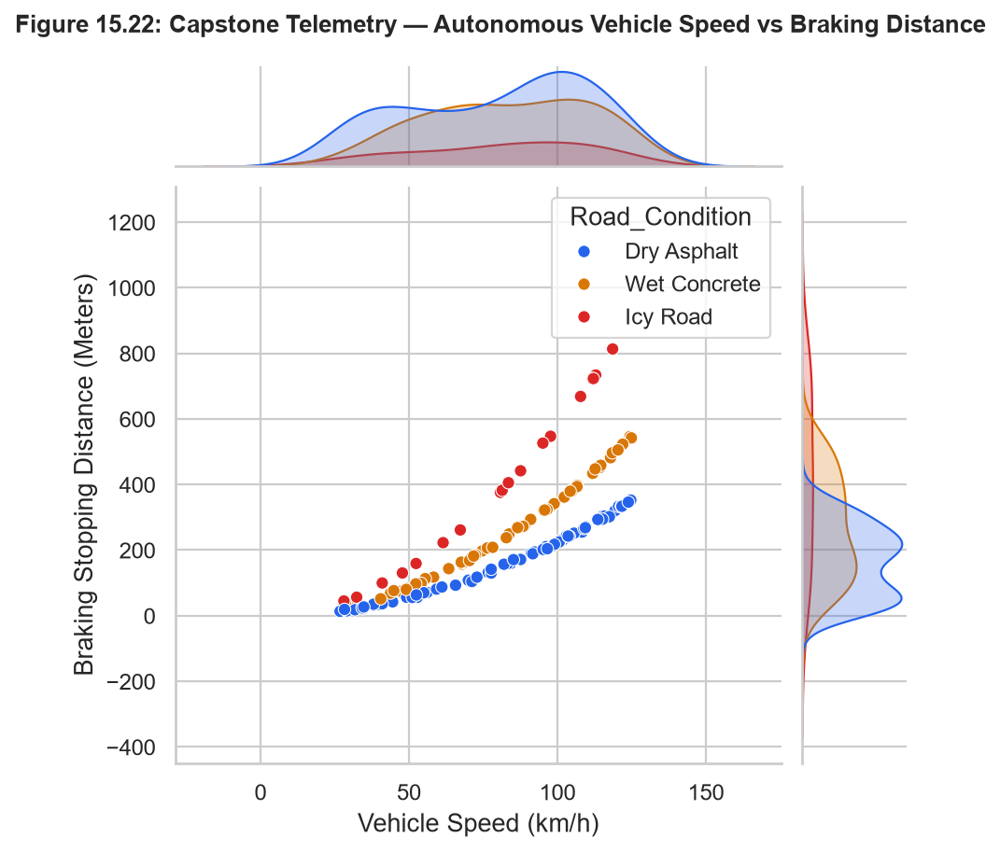
Telemetry results prove that mean speed 81.3 km/h par overall speed-to-distance correlation r = 0.8091 hai. Lekin Icy roads par braking distance extreme exponential climb show karta hai (maximum recorded distance: 813.2 meters), demonstrating that linear safety margins on icy conditions fail catastrophically!
import pandas as pd
import seaborn as sns
import matplotlib.pyplot as plt
# Load autonomous vehicle telemetry logs
df_auto = pd.read_csv("scratch/seaborn_topic15_data/autonomous_vehicle_telemetry.csv")
# Palette for road hazard conditions
road_palette = {"Dry": "#27ae60", "Wet": "#2980b9", "Icy": "#e74c3c"}
# Joint regression visualization
g = sns.jointplot(
data=df_auto,
x="Vehicle_Speed_kmh",
y="Braking_Distance_m",
hue="Road_Condition",
palette=road_palette,
kind="scatter",
height=8,
marginal_kws=dict(fill=True, common_norm=False)
)
# Overlay individual OLS trendlines per road condition
for condition, color in road_palette.items():
subset = df_auto[df_auto["Road_Condition"] == condition]
sns.regplot(
data=subset,
x="Vehicle_Speed_kmh",
y="Braking_Distance_m",
scatter=False,
ax=g.ax_joint,
color=color,
ci=None
)
g.figure.suptitle("Autonomous Telemetry: Speed vs Braking by Hazard Condition", y=1.02, weight="bold")
plt.savefig("coding/seaborn/topic_15/assets/capstone_autonomous_telemetry.png", dpi=160, bbox_inches="tight")
plt.close()Data visualization strategy decide karte waqt is practical decision guide ka use karein:
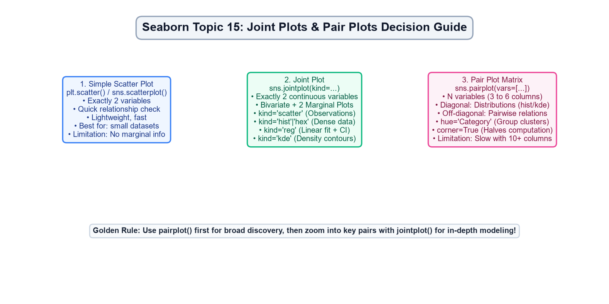
A) matplotlib.axes.Axes
B) seaborn.axisgrid.JointGrid (Correct)
C) seaborn.axisgrid.PairGrid
D) seaborn.axisgrid.FacetGrid
Explanation: sns.jointplot() internally ek JointGrid object instantiate karta hai jisme teen sub-axes hote hain: ax_joint, ax_marg_x, aur ax_marg_y.
A) Diagonal plots ko circle me convert karta hai.
B) Redundant upper triangle subplots ko drop karke visual clarity aur render speed 2x boost karta hai. (Correct)
C) X aur Y axes ke labels rotate karta hai.
D) Correlation coefficient print karta hai.
Explanation: Full square matrix me upper triangle lower triangle ka exact inverted transpose hota hai (X vs Y vs Y vs X). corner=True se redundant plots suppress ho jate hain.
A) Hexagonal bins
B) 1D Univariate Histograms (Correct)
C) Box plots
D) Scatter dots
Explanation: Marginals par hamesha 1D univariate distribution display hoti hai. kind="hex" ke saath marginals standard 1D discrete histograms render karte hain.
A) Histogram
B) Kernel Density Estimate (KDE) curve (Correct)
C) Scatter plot
D) Bar plot
Explanation: Jab hue None hota hai, tab default "hist" banta hai. Lekin jaise hi hue provide kiya jata hai, Seaborn visually smooth overlapping group density compare karne ke liye automatically "kde" par switch kar leta hai.
A) g.ax
B) g.ax_joint (Correct)
C) g.axes[0]
D) g.center_ax
Explanation: JointGrid ke pass .ax attribute nahi hota. Central plot ko g.ax_joint ke through reference kiya jata hai.
A) 30
B) 120
C) 225 (Correct)
D) 15
Explanation: Subplot count M × M hota hai. For M = 15, total subplots 15 × 15 = 225 banenge, jo heavy memory leak aur laggy render cause karega!
A) kind="scatter"
B) kind="hex" (Hexbin) (Correct)
C) kind="reg" with no scatter
D) kind="strip"
Explanation: kind="hex" 2D continuous space ko regular hexagonal cells me aggregate karta hai, jisse dense regions high-contrast heat color se identify ho jate hain.
A) Seaborn titles support nahi karta.
B) plt.title() last active Matplotlib axis (ax_marg_y) par title chipka deta hai, overall figure par nahi. (Correct)
C) Matplotlib crash ho jata hai.
D) Syntax error throw hota hai.
Explanation: g.figure.suptitle("Title", y=1.02) use karna zaroori hai kyunki JointGrid ek multiple axes figure canvas hai.
A) g.plot_marginals(sns.kdeplot) (Correct)
B) g.map_diag(sns.kdeplot)
C) g.add_kde_marginals()
D) g.ax_marg.plot()
Explanation: JointGrid.plot_marginals() top aur right marginal axes par specified Seaborn univariate plotting function ko map karta hai.
A) g.map_lower() and g.map_upper() (Correct)
B) g.plot_joint() and g.plot_corner()
C) g.ax_lower.scatter() and g.ax_upper.kde()
D) g.set_upper_lower()
Explanation: PairGrid teen discrete mapping methods provide karta hai: map_diag() for diagonal, map_lower() for lower triangle, and map_upper() for upper triangle.
Visual Clues: Tight points around trendline, narrow 95% translucent confidence band, bell-shaped symmetric marginal histograms on both axes.
Statistical Deduction: Study hours aur Final marks ke beech strong positive linear dependency hai (r = 0.9638, OLS slope +6.0385). Marginals indicate karte hain ki study hours normal distribution follow karte hain centered around 5.0 hours, aur marks centered around 66.8.
Visual Clues: Deep dark purple-blue hexagonal cluster at age 40–55 and spend $400–$600, surrounded by pale yellow low-density hexes.
Statistical Deduction: E-commerce spending age ke saath strictly linear nahi hai, balki middle-aged demographic (40–55 years) me high-density expenditure hotspot form karta hai. Outlying younger shoppers lower expenditure bins me disperse hain.
Visual Clues: Diagonal KDE plots show CS, Business, and Arts curves largely overlapping across study hours and final marks.
Statistical Deduction: Academic Major final marks par confounding bias create nahi kar raha. Study hours aur assignment score ki intrinsic correlation across all three academic disciplines consistent aur uniform rehti hai.
Visual Clues: Platinum users (green) completely isolated in top right; Bronze (red) in bottom left; Silver (orange) transition bridge in center.
Statistical Deduction: Feature pairs Monthly_Spend_USD vs Annual_Orders_Count linearly separable boundary exhibit karte hain. Platinum customers (r = 0.9536) high volume + high revenue generate karte hain, proving tier loyalty program effectiveness.
Visual Clues: Red points (Icy) have steep upward curvature, high variance scatter, and maximum braking distance reaching 813.2 meters compared to < 200m on Dry road.
Statistical Deduction: Kinetic friction on icy surfaces drops drastically, causing braking distance to scale super-linearly with speed (d ∝ v2). Autonomous braking safety margins must triple reaction distance on ice.
Objective: Ek customized JointGrid create karein jisme central plot par Hexbin plot ho aur marginals par Box plots draw hon.
import seaborn as sns
import matplotlib.pyplot as plt
import pandas as pd
df = pd.read_csv("scratch/seaborn_topic15_data/ecommerce_customer_analytics.csv")
# 1. Initialize empty JointGrid
g = sns.JointGrid(data=df, x="Annual_Orders_Count", y="Monthly_Spend_USD", height=7)
# 2. Plot central hexbin using custom lambda or ax_joint method
g.ax_joint.hexbin(df["Annual_Orders_Count"], df["Monthly_Spend_USD"], gridsize=20, cmap="viridis", mincnt=1)
# 3. Plot boxplots on marginals
sns.boxplot(x=df["Annual_Orders_Count"], ax=g.ax_marg_x, color="#3498db")
sns.boxplot(y=df["Monthly_Spend_USD"], ax=g.ax_marg_y, color="#2ecc71")
g.figure.suptitle("Hybrid JointGrid: Hexbin Center + Boxplot Marginals", y=1.02)
plt.show()Objective: Ek dataset se exactly 3 continuous features select karein, hue assign karein, redundant upper triangle drop karein, aur points par subtle alpha transparency apply karein.
import seaborn as sns
import matplotlib.pyplot as plt
import pandas as pd
df = pd.read_csv("scratch/seaborn_topic15_data/student_performance_dataset.csv")
g = sns.pairplot(
data=df,
vars=["Study_Hours_Per_Day", "Assignment_Score", "Final_Exam_Marks"],
hue="Academic_Major",
palette="Set2",
corner=True,
diag_kind="kde",
plot_kws={"alpha": 0.75, "s": 45, "edgecolor": "white", "linewidths": 0.5},
diag_kws={"fill": True, "alpha": 0.4}
)
g.figure.suptitle("Academic Metrics: Tri-Feature Lower Triangle Matrix", y=1.02)
plt.show()Objective: sns.PairGrid initialize karein jisme lower triangle me Scatter points hon, upper triangle me 2D KDE contour rings hon, aur diagonal par Histograms hon.
import seaborn as sns
import matplotlib.pyplot as plt
import pandas as pd
df = pd.read_csv("scratch/seaborn_topic15_data/fitness_wearable_health.csv")
# 1. Initialize PairGrid
g = sns.PairGrid(df, vars=["Daily_Steps", "Active_Minutes", "Calories_Burned"], hue="Fitness_Category", palette="coolwarm")
# 2. Map geometries to distinct matrix regions
g.map_diag(sns.histplot, multiple="stack", bins=15)
g.map_lower(sns.scatterplot, alpha=0.7, s=40)
g.map_upper(sns.kdeplot, levels=4, alpha=0.6)
g.add_legend(title="Cohort")
g.figure.suptitle("Asymmetric Tri-Modal Health Grid", y=1.02)
plt.show()Code Snippet:
g = sns.PairGrid(df, corner=True)
g.map_upper(sns.scatterplot)
g.map_lower(sns.scatterplot)Predicted Outcome: g.map_upper() silently executes but renders zero plots! Kyunki corner=True specify karne se Seaborn upper triangle ke axes ko internal initialization ke dauran remove / disable kar deta hai. Sirf map_lower() aur map_diag() valid rahenge.
Code Snippet:
sns.pairplot(df, hue="Calories_Burned") # continuous floatPredicted Outcome: Plot render to ho jayega lekin Seaborn continuous variable ke har distinct float value ko independent category treat karne ki koshish karega ya continuous colormap use karega. Legend me dozens of tiny discrete entries ban jayengi jisse right side screen overflow ho jayegi, aur diagonal KDE curves collapse ho kar single lines ban jayengi!
Scenario: Aap ek autonomous driving vehicle startup me Lead Perception Engineer hain. Aapke fleet test runs me rainy aur icy conditions me emergency braking failures report hue hain. Aapka task hai autonomous_vehicle_telemetry.csv par comprehensive exploratory multi-plot telemetry audit conduct karna.
Vehicle_Speed_kmh, Radar_Reaction_Time_sec, aur Braking_Distance_m ke pairwise relationships ko lower-triangle matrix me visualize karein (corner=True).Road_Condition (Dry, Wet, Icy) ko hue me map karein with distinct high-contrast colors (Green, Blue, Red).sns.jointplot() create karein with kind="reg" to calculate condition-specific stopping distance regressions.Aapka complete solution scratch/seaborn_topic15_data/autonomous_vehicle_telemetry.csv dataset ko cleanly read karega, verified statistics (r = 0.8091, Mean speed = 81.3 km/h, Max braking distance = 813.2 m) confirm karega, aur publication-ready high-DPI figure export karega.
Aapne sns.jointplot() aur sns.pairplot() ke zariye bivariate relationships aur multivariate pairwise matrices ko master kar liya hai! Next topic me hum explore karenge Facet Grids & Multi-Plot Grid Layouts (Topic 16) — jisme aap seekhenge ki kaise sns.FacetGrid aur multi-dimensional categorical conditioning se complex dataset ko clean row-and-column subplots me partition kiya jata hai!